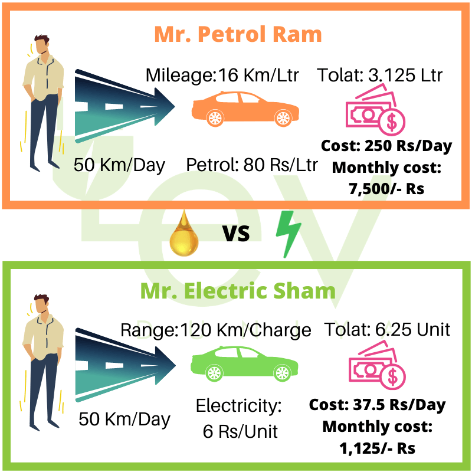

Some areas grant electric vehicle owners the privilege of using carpool or HOV lanes, even when driving alone, leading to time savings during commutes and reduced wear and tear on the vehicle.
Charging an EV at home allows for more predictable costs. With stable electricity rates, you can calculate charging expenses more accurately than fluctuating gasoline prices.
Although the electric vehicle market is still evolving, some studies suggest that EVs can hold their value well, making them a potentially wise long-term investment.
Over the vehicle's lifetime, considering the purchase price, operating costs, and potential resale value, EVs can offer a lower total cost of ownership compared to traditional vehicles.
EV owners can enjoy substantial savings over time due to reduced fuel expenses and lower maintenance costs. As EV technology advances and economies of scale are achieved, these savings are expected to increase further.